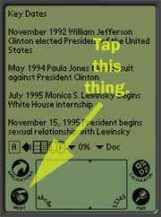

CSpotRun Frequently Asked Questions
- Where do I get DOC files?
- You can download a many pre-made docs at
MemoWare.
- How do I get my Microsoft Word documents into CSpotRun?
- The Pilot DOC format is not the same as the Microsoft Word format.
Not even a little.
There does exist software to convert Microsoft Word documents
into the Pilot DOC format. A few are listed at
another MemoWare page.
- How do I install DOC files on my Palm thingy?
- You should have downloaded a .pdb file to your desktop. Double-click it.
You'll figure out the rest.
- I installed a document, but it doesn't show up in the list of
documents inside CSpotRun. What's the problem?
- Two possibilities.
1. CSpotRun can only read "DOC" format databases. If you installed
some other format, you'll need some other reader to read it.
2. CSpotRun currently only knows about database in RAM. If you
installed the document on an SD card or a MemoryStick, you'll
need to move it to RAM. (And yes, adding support for expansion
cards to CSpotRun would be great.)
- Why's the name so stupid?
- Shut up.
- I deleted a single document and all of my documents disappeared. What gives?
- You used the built-in Palm launcher's delete
facility. It thinks you are deleting an application and tries to clean up
related databases. In this case, those are your other documents. To work
around this, use the "Delete Doc" menu item in CSpotRun's "Doc" menu.
- The "Doc" menu? I can't find any menus.
- 
- Last year I asked you to add a hyper-bookmark-text-discombobulation-facility.
When are you going to add it?
- I'm pretty much done with CSpotRun.
The source code is open. I try to
support people who are interested in contributing features. And I will
try to find time to fix any sufficiently heinous bugs.
© 1998-2002 Bill Clagett. bill@32768.com All rights reserved.